原156＋真实事件50，共206场；20地点单次固定Logistic材料头，10地点留出。冻结DINO token逐个预测后对象均值；仅仲裁COMPACT新增扣量，支持与直接距离比完全一致。六个继承固定检查加大庆/阳泉固定夏季定位场。每场各法同RAW色限、同原支持。
结果与局限 · 冻结机制 · 必要指标 · 固定位置与极值结果
末列只显示本日有支持的COMPACT对象权重；灰色代表本支无权重，不是完整材料概率图。定位点无支持时按原合同保留TENSOR。
原30新增扣量 0.7558；231地图交格恢复 28.71%。两项均优于第10直接距离比，仍不及VISIBLE/FOREST/BOUNDED当前平均权衡。弱标签留出balanced accuracy 82.26%不代表PM精度。
旧GRAPH剩余新增扣量 0.828 → DINO辅助头 0.939 μg/m³；实际PM变化 -0.111。
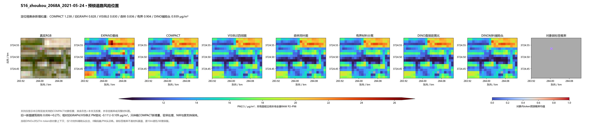
旧GRAPH剩余新增扣量 0.137 → DINO辅助头 0.103 μg/m³；实际PM变化 +0.033。
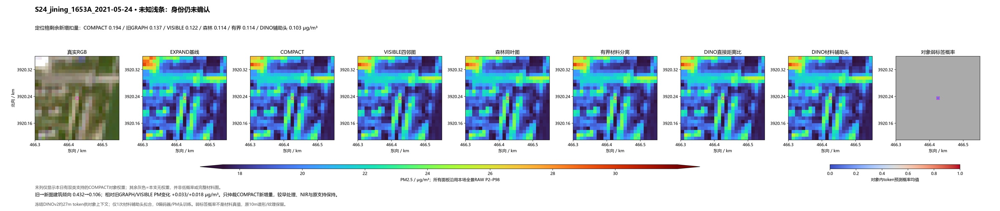
旧GRAPH剩余新增扣量 1.505 → DINO辅助头 1.309 μg/m³；实际PM变化 +0.196。
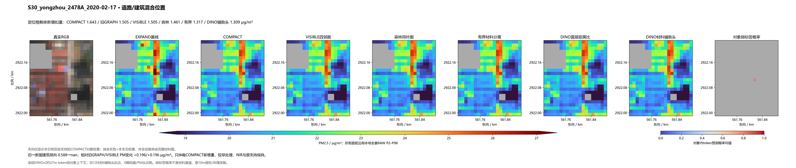
旧GRAPH剩余新增扣量 0.674 → DINO辅助头 0.679 μg/m³；实际PM变化 -0.005。
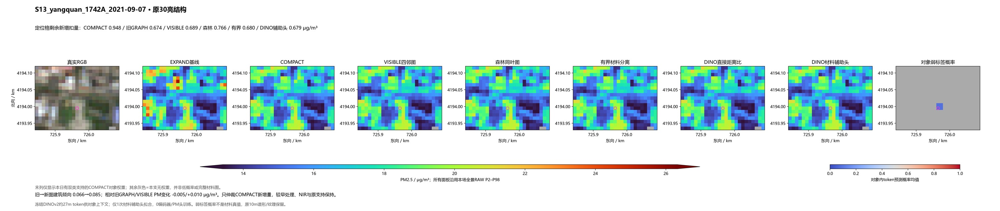
旧GRAPH剩余新增扣量 0.612 → DINO辅助头 0.588 μg/m³；实际PM变化 +0.025。
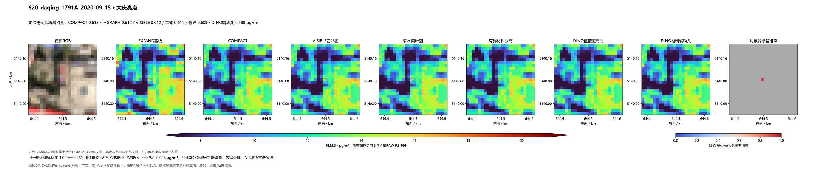
旧GRAPH剩余新增扣量 0.245 → DINO辅助头 0.307 μg/m³；实际PM变化 -0.062。
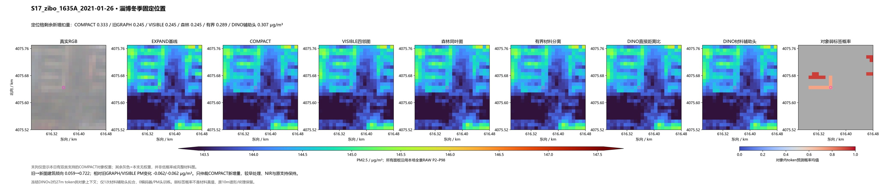
旧GRAPH剩余新增扣量 0.422 → DINO辅助头 0.579 μg/m³；实际PM变化 -0.157。
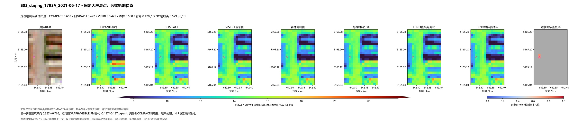
旧GRAPH剩余新增扣量 0.348 → DINO辅助头 0.358 μg/m³；实际PM变化 -0.010。
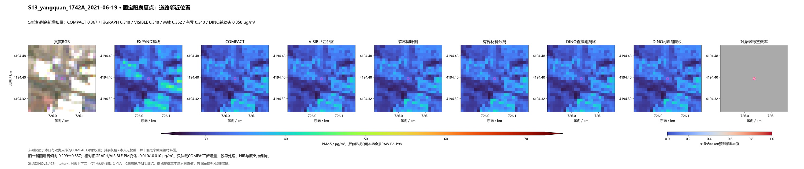
相对直接距离比 / VISIBLE PM变化 -0.627254 / -0.045957 μg/m³。
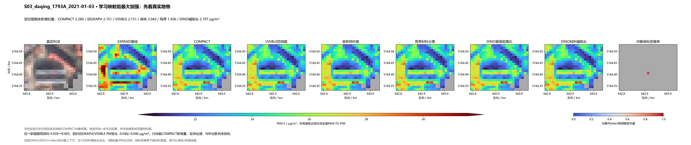
相对直接距离比 / VISIBLE PM变化 -0.186670 / -0.378891 μg/m³。
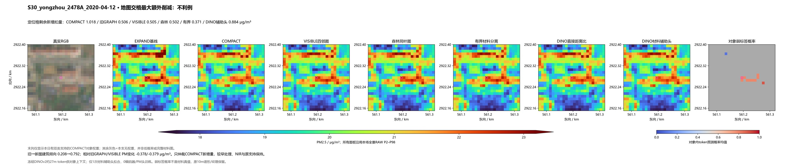
相对直接距离比 / VISIBLE PM变化 +0.379591 / +1.025413 μg/m³。
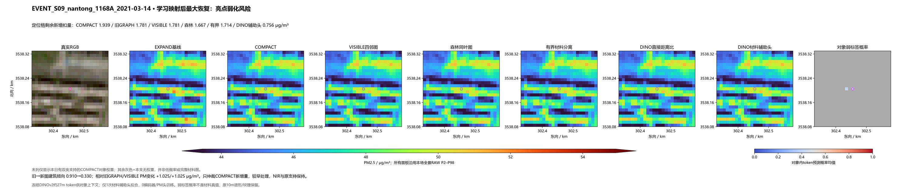
相对直接距离比 / VISIBLE PM变化 -0.289016 / +0.011551 μg/m³。
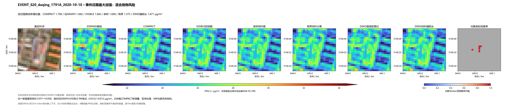
相对直接距离比 / VISIBLE PM变化 +0.049825 / +0.782627 μg/m³。
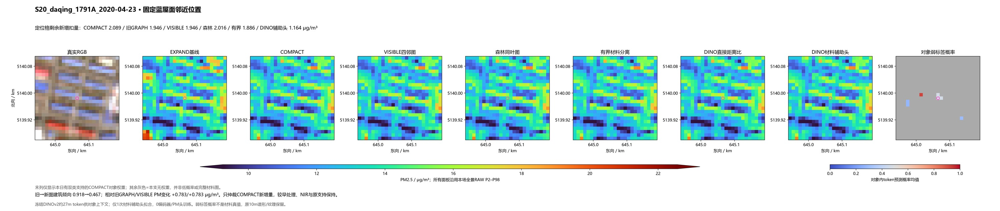
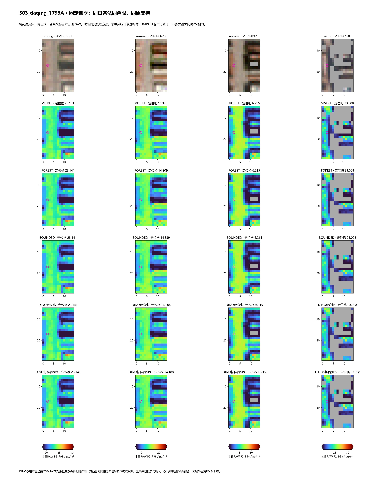
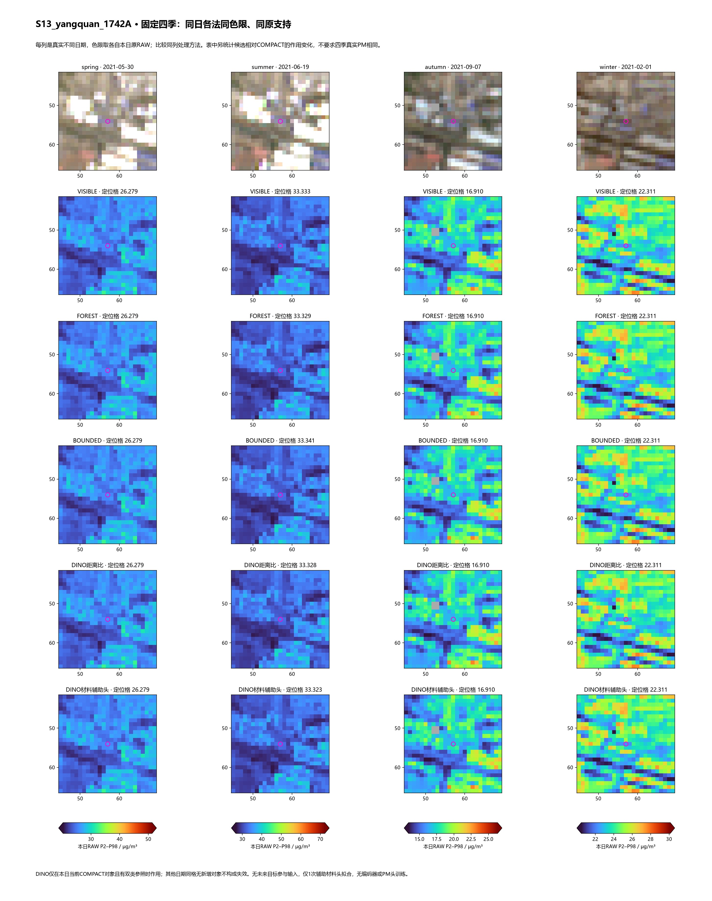
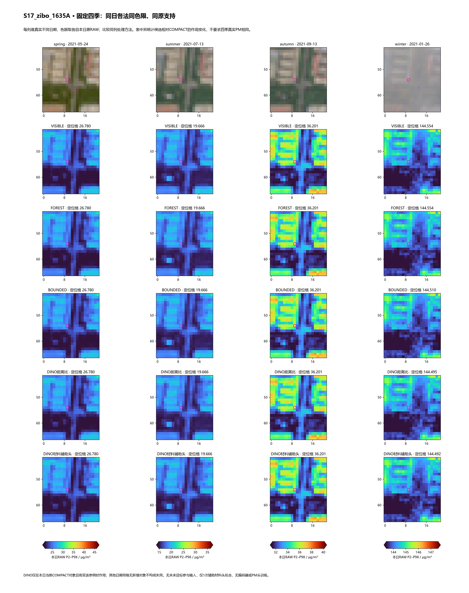